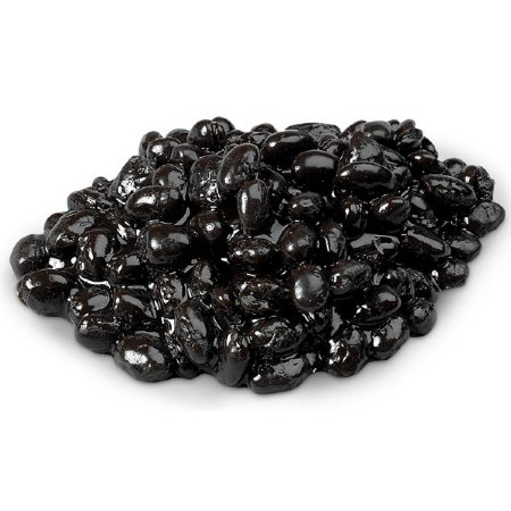
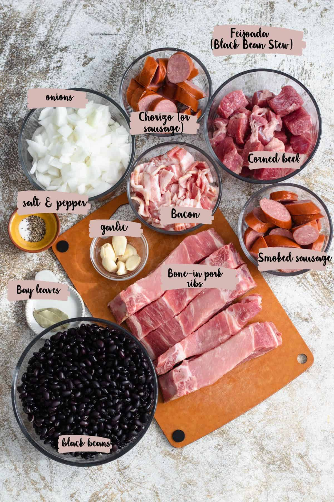

- Salt
- Black Pepper
- Bay Leaves
- Smoked Paprika
- Chili Flakes

Soak the beans overnight. Cook pork and garlic. Add beans and simmer for 2 hours. Serve hot with rice and orange slices.
|
|
||
| Ingredient | Amount | Image |
|---|---|---|
| Black Beans | 2 cups |  |
| Pork | 1 lb |  |
| Seasonings |
|
|
|
Instructions: Soak the beans overnight. Cook pork and garlic. Add beans and simmer for 2 hours. Serve hot with rice and orange slices. |
||